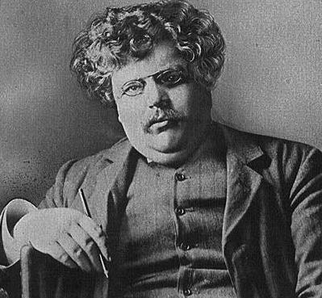

m. c. de marco: To invent new life and new civilizations...
A Little G. K. Chesterton Page

He has come to the most dreadful conclusion a literary man can come to, the conclusion that the ordinary view is the right one. It is only the last and wildest kind of courage that can stand on a tower before ten thousand people and tell them that twice two is four. HERETICS
Gilbert Keith Chesterton (1874-1936) was a British journalist, a distributivist and eventually a Catholic. Best known perhaps for his Father Brown mysteries, he also wrote novels, poetry, biography, literary criticism, social commentary and apologetics.
[This is the oldest page on the site; I think I first put it up sometime in the 1990's. Links may not be up-to-date.]
Local Resources
- Chesterton Quotes: "It isn't that they can't see the solution. It is that they can't see the problem."
- Links to his works
- A few pages about Distributivism, Chesterton's political philosophy
Off-site Links
- Gilbert Magazine
- The American Chesterton Society proffers a Chesterton T-shirt and quotes by topic.
- Martin Ward's G. K. Chesterton Page includes a biography and all of Chesterton's on-line works.
- David W. Fagerberg's article, The Essential Chesterton, in the March 2000 issue of First Things.
- Dave Armstrong's G. K. Chesterton: The Colossal Genius features bibliographies, articles, book reviews and much more.